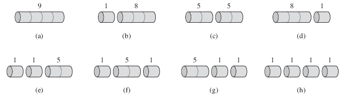
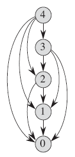
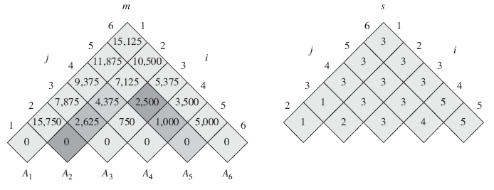
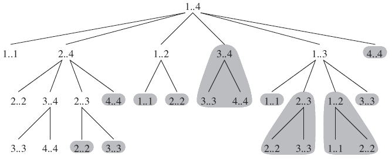
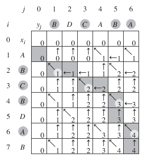
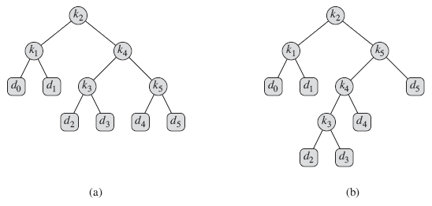
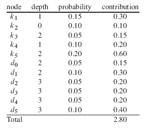
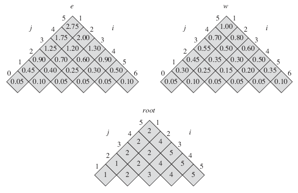

15.1 Rod cutting
pi : 길이 i인치 막대의 달러 가격
| 길이 i | 1 | 2 | 3 | 4 | 5 | 6 | 7 | 8 | 9 | 10 |
| 가격 pi | 1 | 5 | 8 | 9 | 10 | 17 | 17 | 20 | 24 | 30 |
그림 15.1 막대 가격표 예시

그림 15.2 길이 4인 막대를 자르는 8가지 방법. 막대 위에 숫자는 가격을 나타낸다. 최고가는 (c) 이다.
분해(decomposition)는 길이 n인 막대를 나누는 것이다. 길이 n인 막대는 k개의 부분 막대로 분해될 수 있다.
| n = i1 + i2 + ... + ik (1 ≤ k ≤ n) |
rn은 길이 n일 때 분할을 통해 얻을 수 있는 최대 수입이다.
| rn = pi1 + pi2 + … + pik |
(15.1) rn = max(pn, r1+rn-1, r2+rn-2, ... , rn-1+r1)
(15.2) rn = max1≤i≤n (pi + rn-i)
Recursive top-down implementation
CUT-ROD(p,n)
1 if n == 0
2 return 0
3 q = -∞
4 for i = 1 to n
5 q = max(q,p[i]+CUT-ROD(p,n-i))
6 return q
T(n)은 CUT-ROD 호출 횟수이고 T(0) = 1 이다.
(15.3) $$T(n) = 1 + \sum_{j=0}^{n-1}T(j)$$
(15.4) T(n) = 2n
CUT-ROD의 막대 자르는 방법의 개수는 2n-1이다.
Using dynamic programming for optimal rod cutting
동적 프로그래밍은 부분 문제의 계산 결과를 저장해 놓은 뒤 다음에 같은 부분 문제를 만났을 때 저장한 계산 결과를 가져오는 것이다. 이를 통해 알고리즘 실행시간을 지수에서 다항으로 바꿀 수 있다.
동적 프로그래밍의 두 가지 방법 (실행시간: Θ(n2))
- 위에서 아래로 가면서 기록하기(top-down with memoization1) - 재귀
- 아래에서 위로 가기(bottom-up method) - 반복
1 memoization은 memo에 값을 기록하는 것을 말한다. 나중에 이 메모를 다시 확인할 수 있다.
MEMOIZED-CUT-ROD(p,n) // p is an array containing prices
1 let r[0..n] be a new array
2 for i = 0 to n
3 r[i] = -∞
4 return MEMOIZED-CUT-ROD-AUX(p,n,r)
MEMOIZED-CUT-ROD-AUX(p,n,r)
1 if r[n] ≥ 0
2 return r[n]
3 if n == 0
4 q = 0
5 else q = -∞
6 for i = 1 to n
7 q = max(q,p[i]+MEMOIZED-CUT-ROD-AUX(p,n-i,r))
8 r[n] = q
9 return q
BOTTOM-UP-CUT-ROD(p,n)
1 let r[0..n] be a new array
2 r[0] = 0
3 for j = 1 to n
4 q = -∞
5 for i = 1 to j
6 q = max(q,p[i]+r[j-i])
7 r[j] = q
8 return r[n]
BOTTOM-UP-CUT-ROD은 natural ordering1을 사용한다.
1 natural ordering : 1 10 2 20과 같은 알파벳숫자 정렬 방식이 아닌 1 2 10 20 과 같이 인간에게 자연스럽게 보이도록 하는 정렬
Subproblem graphs

그림 15.4 n = 4인 막대 자르기 문제에 대한 부분문제 그래프. 각 정점은 남은 부분문제의 크기를 나타낸다.
Reconstructing a solution
동적 프로그래밍을 사용한 해답은 최적값만 반환하고 최적값일 때의 막대 크기는 반환 하지 않는다. 다음은 막대 크기까지 반환하는 코드이다.
EXTENDED-BOTTOM-UP-CUT-ROD(p,n)
1 let r[0..n] and s[0..n] be new arrays
2 r[0] = 0
3 for j = 1 to n
4 q = -∞
5 for i = 1 to j
6 if q < p[i] + r[j-i]
7 q = p[i] + r[j-i]
8 s[j] = i
9 r[j] = q
10 return r and s
PRINT-CUT-ROD-SOLUTION(p,n)
1 (r,s) = EXTENDED-BOTTOM-UP-CUT-ROD(p,n)
2 while n > 0
3 print s[n]
4 n = n-s[n]
// 남은 막대의 첫 조각을 분할하면서 분할한 첫 번째 조각을 출력한다.
예)
EXTENDED-BOTTOM-UP-CUT-ROD(p,10)
| i | 0 | 1 | 2 | 3 | 4 | 5 | 6 | 7 | 8 | 9 | 10 |
r[i] | 0 | 1 | 5 | 8 | 10 | 13 | 17 | 18 | 22 | 25 | 30 |
s[i] | 0 | 1 | 2 | 3 | 2 | 2 | 6 | 1 | 2 | 3 | 10 |
ㄴ> n=10일 경우, 10 하나만 출력한다. n=7일 경우, 1과 6을 출력한다.
15.2 Matrix-chain multiplication
15.5는 행렬 곱(matrix multiplication)의 사슬(chain)을 나타낸다.
(15.5) A1A2…An
행렬 곱은 결합성(associative)을 가지므로 괄호의 위치에 상관없이 똑같은 결과를 낸다.
예)
<A1,A2,A3,A4>
(A1(A2(A3A4))),
(A1((A2A3)A4)),
((A1A2)(A3A4)),
((A1(A2A3))A4),
(((A1A2)A3)A4).
MATRIX-MULTIPLY(A,B)
1 if A.columns ≠ b.rows
2 error "incompatible dimensions"
3 else let C be a new A.rows × B.columns matrix
4 for i = 1 to A.rows
5 for j = 1 to B.columns
6 cij = 0
7 for k = 1 to A.columns
8 cij = cij + aik·bkj
9 return C
예)
행렬 3개의 차원(dimension)을 각각 10×100, 100× 5, 5×50이라고 하자.
((A1A2)A3) -> 10×100×5 + 10×5×50 = 5000 + 2500 = 7500
(A1(A2A3)) -> 10×100×50 + 100×5×50 = 50000 + 25000 = 75000
첫 번째 행렬 곱의 결과값은 두 번째보다 열배 더 빠르다.
☞ 행렬 곱에서 행렬의 위치는 매우 중요하다.
행렬사슬 곱 문제(matrix-chain multiplication problem)
n개의 행렬로 이루어진 사슬 <A1,A2,...,An>이 주어졌을 때(행렬 Ai는 pi-1×pi 차원을 가진다), 스칼라 곱의 개수를 최소화하는 방식으로 A1A2…An을 완전히 괄호로 덮어야 한다.
Counting the number of parenthesizations
P(n) : n개 행렬로 이루어진 수열을 괄호짓는 횟수
(15.6)
$$P(n) = \begin{cases} 1 &\text{if }n=1\\\sum_{k=1}^{n-1}P(k)P(n-k) &\text{if }n\geq 2\end{cases}$$
실행시간: Ω(2n)
결론: 억지기법(brute-force)은 지수 시간을 가지므로 비효율적이다.
Applying dynamic programming
- 최적해 구조를 기술한다
- 최적해 값을 재귀적으로 정의한다
- 최적해 값을 계산한다
- 계산된 정보를 가지고 최적해를 건설한다
1단계 : 최적 괄호짓기 구조
- Ai..j 는 AiAi+1…Aj (i ≤ j)를 의미한다. 만약 문제가 자명하지 않으면(nontrivial, i.e. i < j), Ak와 Ak+1 (i ≤ k < j) 로 나눠야 한다. 그 다음에 Ai..k와 Ak+1..j를 계산한 후 서로 곱해 최종 결과인 Ai..j를 만든다.
- 최적 부분구조를 만들기 위해서 Ai..k와 Ak+1..j는 각각 최적 괄호짓기를 해야한다. 한쪽이라도 더 낮은 값을 지닌다면 곱을 할 때 최적해를 갖지 못하기 때문이다.
2단계 : 재귀적 해법
AiAi+1…Aj (1 ≤ i < j ≤ n)을 괄호 짓는데 드는 최소 비용을 결정해야 한다.
m[i,j] : 행렬 Ai..j를 계산하는데 필요한 스칼라 곱의 최소 개수
재귀적 해법의 두 가지 경우
- i = j 일 때, Ai..i = Ai 이므로 스칼라 곱이 필요없다. 따라서 m[i,j] = 0 (i = 1,2,...,n) 이다.
- i < j 일 때, 1단계를 이용한다.m[i,j] = m[i,k] + m[k+1,j] + pi-1pkpj
(15.7)
$$m[i,j] = \begin{cases}0&\text{if }i=j\\\underset{i\leq k<j}{\min}\{m[i,k] + m[k+1,j] + p_{i-1}p_kp_j\}&\text{if }i<j\end{cases}$$
3단계 : 최적 비용 계산하기
실행시간: Θ(n3)
MATRIX-CHAIN-ORDER(p)
1 n = p.length - 1
2 let m[1..n,1..n] and s[1..n-1,2..n] be new tables
3 for i = 1 to n
4 m[i,i] = 0
5 for l = 2 to n // l is the chain length
6 for i = 1 to n-l+1
7 j = i+l-1
8 m[i,j] = ∞
9 for k = i to j-1
10 q = m[i,k] + m[k+1,j] + pi-1pkpj
11 if q < m[i,j]
12 m[i,j] = q
13 s[i,j] = k
14 return m and s

그림 15.5 n = 6일 때 MATRIX-CHAIN-ORDER에 의해 계산된 m,s 표.
| 행렬 | A1 | A2 | A3 | A4 | A5 | A6 |
차원 | 30×35 | 30×15 | 15×5 | 5×10 | 10×20 | 20×25 |
\[\begin{align*} m[2,5] &= \min\begin{cases} m[2,2] + m[3,5] + p_1p_2p_5 = 0 + 2500 + 35\cdot15\cdot20 &= 13,000\\ m[2,3] + m[4,5] + p_1p_3p_5 = 2625 + 1000 + 35\cdot5\cdot20 &= 7125\\ m[2,4] + m[5,5] + p_1p_4p_5 = 0 + 2500 + 35\cdot10\cdot20 &= 11,375\\ \end{cases}\\ &= 7125 \end{align*}\]
4단계 : 최적해 건설하기
PRINT-OPTIMAL-PARENS(s,i,j)
1 if i == j
2 print "A"i
3 else print "("
4 PRINT-OPTIMAL-PARENS(s,i,s[i,j])
5 PRINT-OPTIMAL-PARENS(s,s[i,j]+1,j)
6 print ")"
예) 그림 15.5에서 PRINT-OPTIMAL-PARENS(s,1,6)은 ((A1(A2A3))((A4A5)A6)) 을 출력한다.
15.3 Elements of dynamic programming
동적 프로그래밍에서 top-down방식은 재귀함수 호출로 인한 추가 비용이 발생하므로 bottom-up방식이 더 빠르다.
실행시간 : Ω(2n)
RECURSIVE-MATRIX-CHAIN(p,i,j)
1 if i == j
2 return 0
3 m[i,j] = ∞
4 for k = i to j-1
5 q = RECURSIVE-MATRIX-CHAIN(p,i,k) + RECURSIVE-MATRIX-CHAIN(p,k+1,j) + pi-1pkpj
6 if q < m[i,j]
7 m[i,j] = q
8 return m[i,j]
실행시간 : O(n3)
MEMOIZED-MATRIX-CHAIN(p)
1 n = p.length-1
2 let m[1..n,1..n] be a new table
3 for i = 1 to n
4 for j = 1 to n
5 m[i,j] = ∞
6 return LOOKUP-CHAIN(m,p,1,n)
LOOKUP-CHAIN(m,p,i,j)
1 if m[i,j] < ∞
2 return m[i,j]
3 if i == j
4 m[i,j] = 0
5 else
6 for k = i to j-1
7 q = LOOKUP-CHAIN(m,p,i,k) + LOOKUP-CHAIN(m,p,k+1,j) + pi-1pkpj
8 if q < m[i,j]
9 m[i,j] = q
10 return m[i,j]

그림 15.7 RECURSIVE-MATRIX-CHAIN(p,1,4) 계산을 나타낸 재귀 나무.
15.4 Longest common subsequence
DNA의 한가닥은 염기라 불리는 분자(아데닌, 구아닌, 시토신, 티민 / A,C,G,T)의 문자열로 이루어진다. 문자열 S1과 S2, 그리고 S1과 S2의 부분 문자열 S3에 대해, S1과 S2의 유사성을 비교하는 방법은 다음 두 가지이다.
1 각 문자열이 어느 한쪽의 부분 문자열
2 S1과 S2의 염기 순서를 따지지만 연속적일 필요는 없는 문자열
2번 예)
S1 = ACCGGTCGAGTGCGCGGAAGCCGGCCGAA
S2 = GTCGTTCGGAATGCCGTTGCTCTGTAAA
S1과 S2의 가장 긴 가닥 S3 = GTCGTCGGAAGCCGGCCGAA
여기서는 2번 방법인 최장 공통 부분수열 문제(Longest common subsequence, LCS)의 공식을 구할 것이다. 부분수열 길이는 0이 가능하다. 수열 X = <x1,x2,...,xm>, Y = <y1,y2,...,yn>가 있다고 하자. X의 인덱스로 구성된 수열 <i1,i2,...,ik>이 있을 때 xij = zj (j = 1,2,...,k) 이면 Z는 X의 부분수열이다.
예) Z = <B,C,D,B>는 인덱스 수열 <2,3,5,7>을 가진 X = <A,B,C,B,D,A,B>의 부분수열이다.
수열 X,Y에 대해 수열 Z가 X의 부분수열이면서 Y의 부분수열이면 Z는 X,Y의 공통 부분수열(common subsequence)이다.
예) X = <A,B,C,B,D,A,B>이고 Y = <B,D,C,A,B,A>이면 수열 <B,C,A>는 가장 긴 부분 수열(LCS)은 아니다. 길이가 4인 수열 <B,C,B,A>가 존재하기 때문이다. 여기서 길이 4인 수열은 LCS다. 수열 <B,D,A,B>도 마찬가지로 LCS다.
[두 개의 수열 X = <x1,x2,...,xm>과 Y = <y1,y2,....,ym>의 LCS를 찾는 방법]
1단계: 최장 공통 부분수열 기술하기
억지기법(brute-force)을 쓰면 X는 2m 부분수열을 가진다. 이것은 지수 시간이 걸리므로 실행하기 부적절하다. 정리 15.1은 LCS 문제가 최적 부분구조 속성을 가진다는 것을 보여준다. 보다 정확하게 하기 위해, 수열 X = <x1,x2,...,xm>에 대해 X의 i번째 접미를 Xi = <x1,x2,...,xi>라고 한다.
예) X = <A,B,C,B,D,A,B> 이면, X4 = <A,B,C,B> 이고 X0는 빈 수열이다.
정리 15.1 (LCS의 최적 부분구조) X = <x1,x2,...,xm> 과 Y = <y1,y2,...,yn> 을 수열이라고 하고 Z = <z1,z2,...,zk>를 X와 Y의 LCS라고 하자.
|
2단계: 재귀 풀이법
c[i,j]는 수열 Xi와 Yi의 LCS 길이를 의미한다.
(15.9)
\[c[i,j] = \begin{cases}0 &\text{if }i=0 \text{ or } j=0\\ c[i-1,j-1]+1 &\text{if }i,j>0 \text{ and } x_i = y_j\\ \max(c[i,j-1],c[i-1,j]) &\text{if }i,j>0 \text{ and }x_i \ne y_j \end{cases}\]
3단계: LCS 길이 계산하기
실행시간: Θ(mn)
LCS-LENGTH(X,Y)
1 m = X.length
2 n = Y.length
3 let b[1..m,1..n] and c[0..m,0..n] be new tables
4 for i = 1 to m
5 c[i,0] = 0
6 for j = 0 to n
7 c[0,j] = 0
8 for i = 1 to m
9 for j = 1 to n
10 if xi == yi
11 c[i,j] = c[i-1,j-1]+1
12 b[i,j] = "↖"
13 elseif c[i-1,j] ≥ c[i,j-1]
14 c[i,j] = c[i-1,j]
15 b[i,j] = "↑"
16 else c[i,j] = c[i,j-1]
17 b[i,j] = "←"
18 return c and b

그림 15.8 수열 X = <A,B,C,B,D,A,B>와 Y = <B,D,C,A,B,A>에서 LCS-LENGTH에 의해 계산된 c와 b 테이블.
4단계: LCS 만들기
실행 시간은 O(m+n) 이고, 초기 호출값은 PRINT-LCS(b,X,X.length,Y.length) 이다.
PRINT-LCS(b,X,i,j)
1 if i == 0 or j == 0
2 return
3 if b[i,j] == "↖"
4 PRINT-LCS(b,X,i-1,j-1)
5 print xi
6 elseif b[i,j] == "↑"
7 PRINT-LCS(b,X,i-1,j)
8 else PRINT-LCS(b,X,i,j-1)
15.5 Optimal binary search trees
최적 이진 검색 트리(optimal binary search tree) 구조
이진 검색 트리를 만드는데 이용되는 수열 K = <k1,k2,...,kn> 는 개별 키를 가지며, k1 < k2 < … < kn 이다. pi는 ki가 검색될 확률이다. K에 없는 키를 트리에서 검색할 수 있는데 이 키를 더미키(dummy key)라고 부른다. 더미키는 n+1개로 구성되며 d0,d1,d2,...,dn 이다. d0은 k1보다 작은 값을, dn은 kn (i = 1,2,...,n-1) 보다 큰 값을 그리고 di는 ki와 ki+1 사이에 있는 값을 나타낸다. qi는 di가 검색될 확률이다.

그림 15.9 n = 5인 두 개의 이진 검색 트리. 이 트리는 다음 확률을 가진다.
i | 0 | 1 | 2 | 3 | 4 | 5 |
pi | 0.15 | 0.10 | 0.05 | 0.10 | 0.20 | |
qi | 0.05 | 0.10 | 0.05 | 0.05 | 0.05 | 0.10 |
(a) 검색 기대값 2.80 (b) 검색 기대값 2.75 ㅡ 이 트리가 최적화된 트리이다.
모든 검색의 성공 확률(일반키를 찾는 것)과 실패 확률(더미키를 찾는 것)을 더하면 다음과 같다.
(15.10)
\[\sum_{i=1}^{n}p_i + \sum_{i=0}^{n}q_i = 1\]
가정
- 검색의 실제 비용을 검색된 노드 수와 같다. 즉, "트리 T에서 탐색된 노드 깊이 + 1" 이다.
(15.11)
\[\begin{align*} \text{E}[\text{search cost in }T] &= \sum_{i=1}^{n}(\text{depth}_T(k_i)+1)\cdot p_i + \sum_{i=0}^{n}(\text{depth}_T(d_i)+1)\cdot q_i \\ &= 1 + \sum_{i=1}^{n}\text{depth}_T(k_i)\cdot p_i + \sum_{i=0}^{n}\text{depth}_T(d_i)\cdot q_i \end{align*}\]
* 2번째 등식에서 1은 (15.10)식을 나타낸다.
다음 표는 그림 15.9 (a)의 검색 기대값의 요소를 나타낸다. contribution = (깊이+1) * 확률

그림 15.9를 통해서 알 수 있는 것
- 트리 높이가 가장 작은 것이 반드시 최적 트리를 나타내진 않는다.
- 루트 근처에 가장 확률이 높은 키를 매번 넣는 것도 최적 트리를 나타내진 않는다.
[최적 이진 검색 트리를 찾는 방법]
1단계: 최적 이진 검색 트리 구조
키 ki,...,kj 에 대해 kr (i ≤ r ≤ j)은 최적 부분 트리의 루트이다. kr의 왼쪽 부분 트리는 ki,...,kr-1 (더미키 di-1,...,dr-1) 이고, 오른쪽 부분 트리는 kr+1,...,kj (더미키 dr,...,dj) 이다. 루트 kr의 모든 후보키를 조사한다면 최적 이진 검색 트리를 찾을 수 있다.
빈 부분트리는 더미키 값을 갖는다. 키 ki,...,kj 에 대해 ki가 루트이면 왼쪽 부분 트리는 키를 갖고 있지 않으며 더미키 di-1를 가진다. 마찬가지로 kj가 루트이면 오른쪽 부분 트리는 키를 갖고 있지 않으며 더미키 dj를 가진다.
2단계: 재귀
e[i,j]는 키 ki,...,kj 를 가진 최적 이진 검색 트리를 검색하는데 드는 기대 비용이다. 궁극적으로 e[1,n]을 계산해야 한다.
j = i-1일 때, 더미키 di-1만을 갖는다. 기대 검색 비용은 e[i,i-1] = qi-1 이다.
j ≥ i 일 때, 키 ki,...,kj 에서 루트 kr을 선택해야 한다. 부분 트리가 어떤 노드의 부분 트리가 된다면 각 노드의 깊이는 1씩 증가한다. 이 때 해당 트리의 기대 검색 비용은 (15.12)와 같다.
(15.12)
\[w(i,j) = \sum_{l=i}^{j}p_l + \sum_{l=i-1}^{j}q_l\]
따라서 kr이 키 ki,...,kj인 최적 부분트리의 루트일 때 다음을 얻는다.
e[i,j] = pr + (e[i,r-1] + w(i,r-1)) + (e[r+1,j] + w(r+1,j))
w(i,j) = w(i,r-1) + pr + w(r+1,j) 이므로 다음과 같이 줄일 수 있다. (루트로 정해지는 kr을 미리 알고 있다고 가정)
(15.13) e[i,j] = e[i,r-1] + e[r+1,j] + w(i,j)
(15.14)
\[e[i,j] = \begin{cases} q_{i-1} &\text{if } j = i-1\\ \underset{i\leq r\leq j}{\min}\{e[i,r-1] + e[r+1,j] + w(i,j)\} &\text{if } i \leq j \end{cases}\]
root[i,j]는 1 ≤ i ≤ j ≤ n에 대해 키 ki,...,kj 를 가진 최적 이진 검색 트리의 루트가 kr일 때 r값을 나타낸다.
3단계: 최적 이진 검색 트리의 기대 검색 비용 계산하기
더미키 d0를 저장하려면 e[1,0] 더미키 dn을 저장하려면 e[n+1,n] 이여야 한다. 따라서 테이블 e의 범위는 e[1..n+1,0..n] 이다.
e[i,j] 계산시 w(i,j)는 Θ(j-i) 번 계산되므로 저장 공간을 따로 확보하는 것이 좋다. 테이블 w[1..n+1,0..n]을 사용해 w값을 저장한다. 기본적으로 1 ≤ i ≤ n+1에 대해 w[i,i-1] = qi-1 이다. j ≥ i 에 대해 다음과 같이 계산한다.
(15.15) w[i,j] = w[i,j-1] + pj + qj
따라서 w[i,j] 의 Θ(n2) 값을 각각 Θ(1) 시간으로 계산할 수 있다
실행시간: Θ(n3)
OPTIMAL-BST(p,q,n)
1 let e[1..n+1,0..n], w[1..n+1,0..n], and root[1..n,1..n] be new tables
2 for i = 1 to n+1
3 e[i,i-1] = qi-1
4 w[i,i-1] = qi-1
5 for l = 1 to n
6 for i = 1 to n-l+1
7 j = i+l-1
8 e[i,j] = ∞
9 w[i,j] = w[i,j-1] + pj + qj
10 for r = i to j
11 t = e[i,r-1] + e[r+1,j] + w[i,j]
12 if t < e[i,j]
13 e[i,j] = t
14 root[i,j] = r
15 return e and root

그림 15.10 그림 15.9의 키 분산에 대해 OPTIMAL-BST에 의해 계산된 테이블 e[i,j], w[i,j], root[i,j].